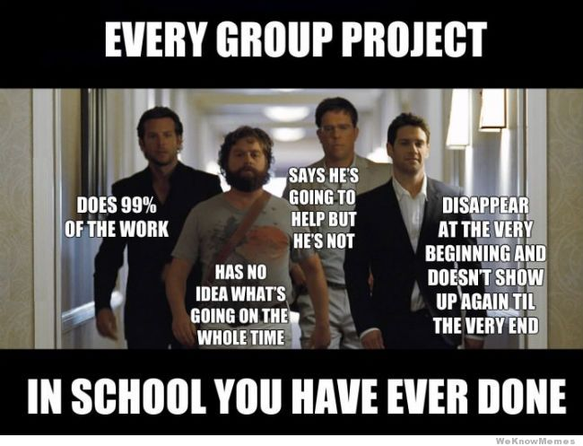

Introduction to Git
-Vignesh Prabhu
Plan for today
- Learn about importance of code revisioning
- Various Free Software SCM softwares
- Try hands-on with Git
Sample Use Case
A team of 5 wants to develop a application in C which will calculate area of circle, square, rectangle and triangle. Since time is less, they decide to share their work load.
College group projects!!!

Let us try to be little more organized!!!
- 4 will write methods to get sides of the shape, and then calculate area of shape and then print it.
- 1 will write the basic stub of the application including main function, including switch case to call the right method.
All work done but How do we merge?
Different SCM Softwares
- Local Data Model
- RCS - Revision Control System
- Client-Server Model
- CVS - Concurrent Version Systems
- SVN - Subversion
- Distributed Model
Advantages of SCMs
- Backup
- Collaboration
- Revisions
- Logging
- Transparency
Let us get our hands dirty!
'git config'
--global user.name "Your Name Here"
--global user.email "your_email@example.com"
Let us create an account in Gitlab
Create new repository in Gitlab
'git remote add origin <url>'
'git push <remote-name> <branch-name> '
Few advance topics
- Code Branch
- Code Merge
- .gitignore
- Tagging
- Reverting changes
Contact me:
+91 9535321976
me@viggy.in